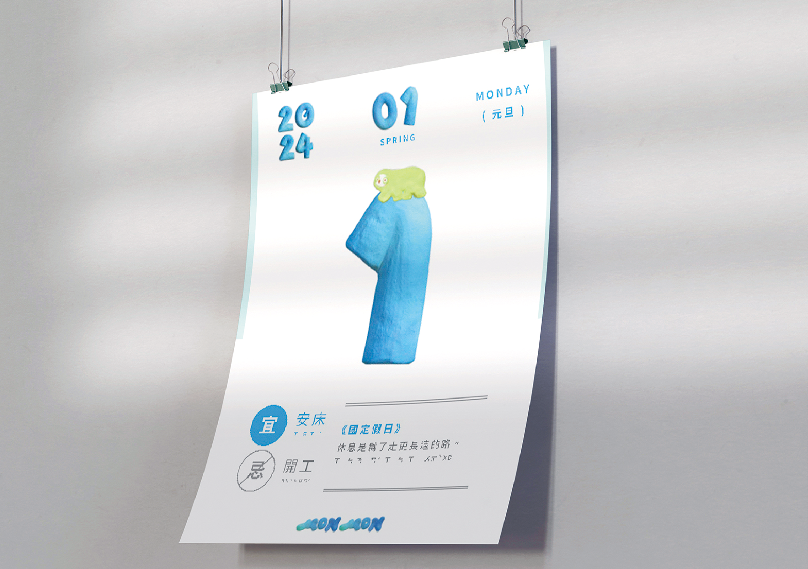
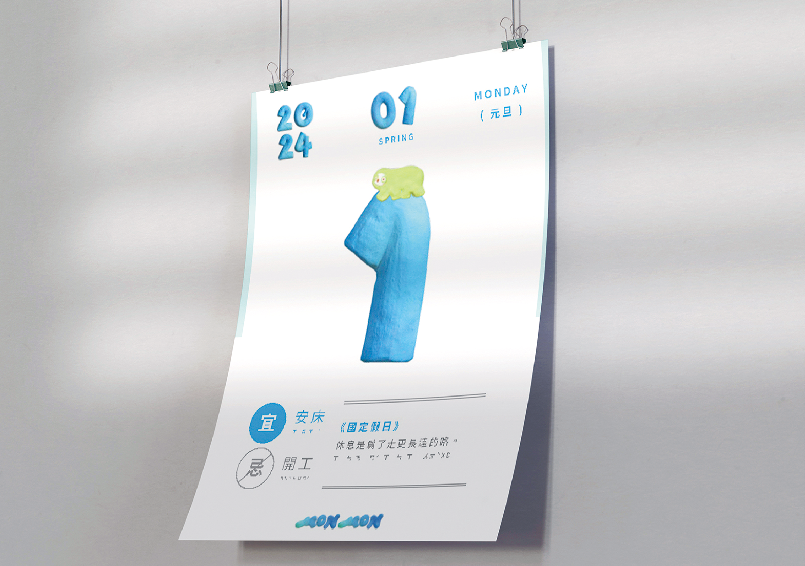
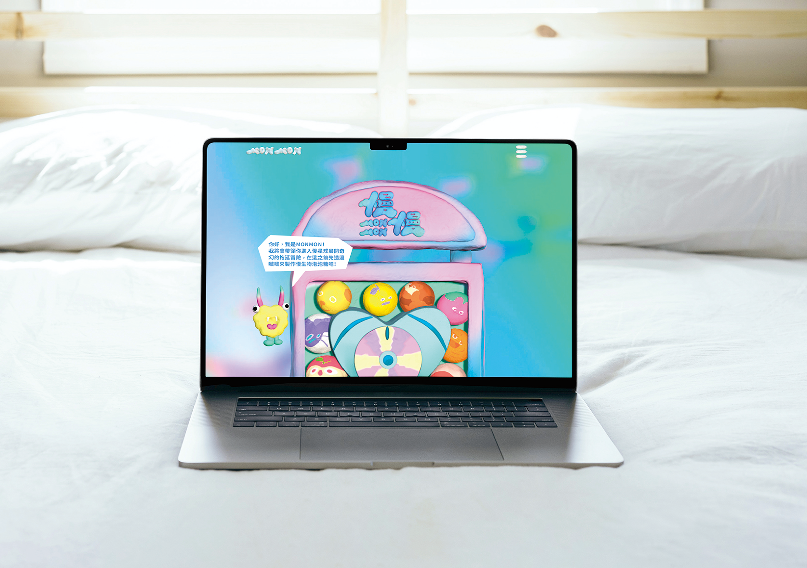
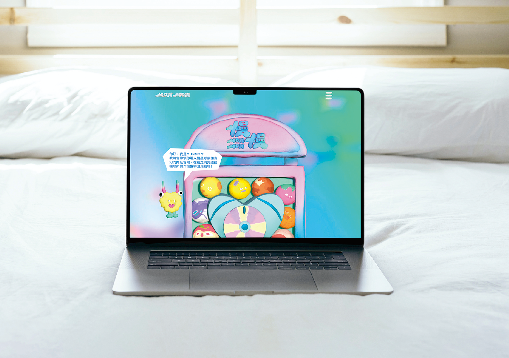

慢慢 MON MON
B02 拖延感受網站導覽設計
12種拖延角色：
MON：鼓勵拖延NOW：不勸導不解決
這些角色被設計成帶有泡泡糖和黏土質感，以吸引人們的注意。而他們所居住的地方，則是一個專為拖延症者打造的心理測驗網站。這個網站提供了黏曆、客製梗圖和貼圖等功能，以輕鬆有趣的方式讓人們更快速地了解拖延症，同時達到共鳴和療癒的效果。
These characters are designed with a bubble gum and clay texture to attract people's attention. And the place they reside is a psychological test website designed specifically for procrastinators. This website offers features like a sticky calendar, custom memes, and stickers to help people understand procrastination more quickly and achieve resonance and healing effects in a relaxed and fun way.
組員 Members
夏涓
朱育潔
林可薇
林語柔
林緗穎
指導老師 Supervisor
黃綝怡


 
 
